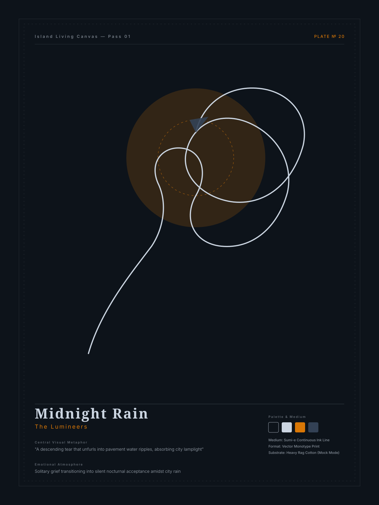

The Lumineers
mock-svg-renderer
Midnight Rain
Emotional Theme
Solitary grief transitioning into silent nocturnal acceptance amidst city rain
Central Visual Metaphor
"A descending tear that unfurls into pavement water ripples, absorbing city lamplight"
Primary Subject & Line Logic
A continuous sumi-ink stroke tracing the bowed posture of a solitary trench-coated listener whose spine dissolves into concentric water rings
Supporting Symbols
inverted umbrella catching fallen stars subtle vertical rain striations single amber streetlamp glow
Color Harmony
Deep midnight slate with cool mist line work and solitary warm amber lamplight
Inspect ComfyUI Prompts & Line Instructions
Line Instructions:
An unbroken, weighted fluid stroke begins at the figure silhouette crown, flows down the curve of the back, loops tightly around the folded arms, then expands outward in four gentle, widening elliptical ripples across the bottom plane without ever lifting the pen.
Positive Prompt:masterpiece fine-art editorial poster, expressive single continuous-line ink drawing, unbroken fluid contour drawing, organic variable line weight with subtle ink bleed, subject: A continuous sumi-ink stroke tracing the bowed posture of a solitary trench-coated listener whose spine dissolves into concentric water rings, central metaphor: A descending tear that unfurls into pavement water ripples, absorbing city lamplight, supporting subtle elements: inverted umbrella catching fallen stars, subtle vertical rain striations, single amber streetlamp glow, composition: Off-center vertical placement in the lower-left third; 65% serene negative space in the upper-right hemisphere allowing breathing room, vast intentional negative space, uncrowded, meditative, breathing space, restricted color palette: #0d131a background, #cbd5e1 fluid ink, accented by #d97706, emotional atmosphere: Solitary grief transitioning into silent nocturnal acceptance amidst city rain, museum gallery lithograph, heavy archival cotton paper texture, elegant visual storytelling
Negative Prompt:
photorealism, 3D render, glossy textures, neon lights, generic umbrella silhouette, stock raindrops, text, signature, watermark, clutter, photorealism, 3d render, CGI, octane render, airbrushed, plastic gloss, generic silhouette, stock clipart, meaningless fractal, mandala, repetitive floral pattern, broken lines, multiple overlapping chaotic sketches, messy crosshatching, garish saturated neon colors, rainbow gradient, muddy colors, letters, typography, watermark, text, signature, low resolution, blurry, artifacts